건축기사 (2017-09-23 기출문제)
1과목: 건축계획
1. 미술관 전시실의 순회형식에 관한 설명으로 옳은 것은?
- 연속순회형식은 각 실에 직접 들어갈 수 있다는 장점이 있다.
- 갤러리 및 코리도 형식은 하나의 실을 폐쇄하면 전체 동선이 막히게 되는 단점이 있다.
- 연속순회형식은 연속된 전시실의 한쪽 복도에 의해서 각 실을 배치한 형식이다.
- 중앙홀형식에서 중앙홀을 크게 하면 동선의 혼란은 없으나 장래의 확장에는 다소 무리가 따른다.
(정답률: 79%)

2. 극장의 평면 형식 중 애리나형에 관한 설명으로 옳지 않은 것은?
- 무대의 배경을 만들지 않으므로 경제성이 있다.
- 무대의 장치나 소품은 낮은 가구들로 구성된다.
- 연기는 한정된 액자 속에서 나타나는 구상화의 느낌을 준다.
- 가까운 거리에서 관람하면서 가장 많은 관객을 수용할 수 있다.
(정답률: 87%)
3. 은행의 주출입구에 관한 설명으로 옳지 않은 것은?
- 겨울철의 방풍을 위해 방풍실을 설치하는 것이 좋다.
- 내부와 면한 출입문은 도난방지상 바깥여닫이로 하는 것이 좋다.
- 이중문을 설치하는 경우, 바깥문은 바깥여닫이 또는 자재문으로 계획할 수 있다.
- 어린이들의 출입이 많은 곳에서는 안전을 고려하여 회전문 설치를 배제하는 것이 좋다.
(정답률: 81%)
4. 주택단지안의 건축물에 설치하는 계단의 유효폭은 최소 얼마 이상이어야 하는가? (단, 공동으로 사용하는 계단의 경우)
- 90cm
- 120cm
- 150cm
- 180cm
(정답률: 87%)
5. 병원건축의 형식 중 분관식(pavilion type)에 관한 설명으로 옳은 것은?
- 저층 분산형의 형태이다.
- 각 병실의 채광 및 통풍 조건이 불리하다.
- 환자의 이동은 주로 에스컬레이터를 이용한다.
- 외래부, 부속지료부는 저층부에, 병동은 고층부에 배치한다.
(정답률: 77%)
6. 사무소 건축의 실단위 계획에 관한 설명으로 옳지 않은 것은?
- 개실 시스템은 독립성과 쾌적감의 이점이 있다.
- 개방식 배치는 전면적을 유용하게 이용할 수 있다.
- 개방식 배치는 개실 시스템보다 공사비가 저렴하다.
- 개실 시스템은 연속된 긴 복도로 인해 방깊이에 변화를 주기가 용이하다.
(정답률: 83%)
7. 주택의 거실계획에 관한 설명으로 옳지 않은 것은?
- 거실에서 문이 열린 침실의 내부가 보이지 않게 한다.
- 거실이 다른 공간들을 연결하는 단순한 통로의 역할이 되지 않도록 한다.
- 거실의 출입구에서 의자나 소파에 앉을 경우 동선이 차단되지 않도록 한다.
- 일반적으로 전체 연면적의 10~15% 정도의 규모로 계획하는 것이 바람직하다.
(정답률: 86%)
8. 사무소 건축의 엘리베이터 계획에 관한 설명으로 옳지 않은 것은?
- 대면배치에서 대면거리는 동일 군 관리의 경우는 3.5~4.5m로 한다.
- 여러 대의 엘리베이터를 설치하는 경우, 그룹별 배치와 군 관리 운전방식으로 한다.
- 일렬 배치는 8대를 한도로 하고, 엘리베이터 중심 간 거리는 8m 이하가 되도록 한다.
- 엘리베이터 홀은 엘리베이터 정원 합계의 50% 정도를 수용할 수 있어야 하며, 1인당 점유면적은 0.5~0.8m2로 계산한다.
(정답률: 83%)
9. 불사건축의 진입방법에서 누하진입방식을 취한 것은?
- 부석사
- 통도사
- 화엄사
- 범어사
(정답률: 58%)
10. 다음 건축물 중 익공식(翼工式)에 속하는 것은?
- 강릉 오죽헌
- 서울 동대문
- 봉정사 대웅전
- 무위사 극락전
(정답률: 70%)
11. 도서관 출납 시스템에 관한 설명으로 옳지 않은 것은?
- 자유개가식은 책 내용의 파악 및 선택이 자유롭다.
- 자유개가식은 서가의 정리가 잘 안되면 혼란스럽게 된다.
- 폐가식은 규모가 큰 도서관의 독립된 서고의 경우에 채용한다.
- 폐가식은 서가나 열람실에서 감시가 필요하나 대출절차가 간단하여 관원의 작업량이 적다.
(정답률: 89%)
12. 고대 이집트의 분묘 건축 형태에 속하지 않는 것은?
- 인술라
- 피라미드
- 암굴분묘
- 마스타바
(정답률: 79%)
13. 학교 운영방식에 관한 설명으로 옳지 않은 것은?
- 달톤형은 다양한 크기의 교실이 요구된다.
- 교과교실형은 각 교과교실의 순수율이 낮다는 단점이 있다.
- 플래툰형은 교사수 및 시설이 부족하면 운영이 곤란하다는 단점이 있다.
- 종합교실형은 학생의 이동이 없으며, 초등학교 저학년에 적합한 형식이다.
(정답률: 83%)
14. 주택의 평면과 각 부위의 치수 및 기준척도에 관한 설명으로 옳지 않은 것은?
- 치수 및 기준척도는 안목치수를 원칙으로 한다.
- 거실 및 침실의 평면 각 변의 길이는 10cm를 단위로 한 것을 기준척도로 한다.
- 거실 및 침실의 층높이는 2.4m 이상으로 하되, 5cm를 단위로 한 것을 기준척도로 한다.
- 계단 및 계단창의 평면 각 변의 길이 또는 너비는 5cm를 단위로 한 것을 기준척도로 한다.
(정답률: 77%)
15. 다음 중 기계 공장의 지붕을 톱날형으로 하는 이유로 가장 적당한 것은?
- 모양이 좋다.
- 소음이 줄어든다.
- 빗물 처리가 용이하다.
- 균일한 조도를 얻을 수 있다.
(정답률: 87%)
16. 극장건축에서 무대의 제일 뒤에 설치되는 무대 배경용의 벽을 나타내는 용어는?
- 프로시니엄
- 사이클로라마
- 플라이 로프트
- 그리드 아이언
(정답률: 79%)
17. 메조넷형(maisonette type) 공동주택에 관한 설명으로 옳지 않은 것은?
- 주택내의 공간의 변화가 있다.
- 거주성, 특히 프라이버시가 높다.
- 소규모 단위평면에 적합한 유형이다.
- 양면 개구에 의한 통풍 및 채광 확보가 양호하다.
(정답률: 80%)
18. 다음 중 리조트 호텔에 속하지 않는 것은?
- 해변호텔(beach hotel)
- 부두호텔(harbor hotel)
- 산장호텔(mountain hotel)
- 클럽 하우스(club house)
(정답률: 75%)
19. 페리(C. A. Perry)의 근린주구에 관한 설명으로 옳지 않은 것은?
- 경계 : 4면의 간선도로에 의해 구획
- 지구 내 상업시설 : 지구 중심에 집중하여 배치
- 오픈 스페이스 : 주민의 일상생활 요구를 충족시키기 위한 소공원과 위락공간체계
- 지구 내 가로체계 : 내부 가로망을 단지 내의 교통량을 원활히 처리하고 통과 교통을 방지
(정답률: 76%)
20. 쇼핑센터에서 고객의 주 보행동선으로서 중심 상점과 각 전문점에서의 출입이 이루어지는 곳은?
- 몰(mall)
- 코트(court)
- 터미널(terminal)
- 페데스트리언 지대(pedestrian area)
(정답률: 89%)
2과목: 건축시공
21. 공기단축을 목적으로 공정에 따라 부분적으로 완성된 도면만을 가지고 각 분야별 전문가를 구성하여 패스트(Fast Track)공사를 진행하기에 가장 적합한 조직구조는?
- 기능별 조직(Functional Organization)
- 매트릭스 조직(Matrix Organization)
- 태스크포스 조직(Task Force Organization)
- 라인스탭 조직(Line-Staff Organization)
(정답률: 65%)
22. 콘크리트의 내화, 내열성에 관한 설명으로 옳지 않은 것은?
- 콘크리트의 내화, 내열성은 사용한 골재의 품질에 크게 영향을 받는다.
- 콘크리트는 내화성이 우수해서 600℃ 정도의 화열을 장시간 받아도 압축강도는 거의 저하하지 않는다.
- 철근콘크리트 부재의 내화성을 높이기 위해서는 철근의 피복두께를 충분히 하면 좋다.
- 화재를 당한 콘크리트의 중성화 속도는 그렇지 않은 것에 비하여 크다.
(정답률: 79%)
23. 매스콘크리트(Mass Concrete)의 타설 및 양생에 관한 설명으로 옳지 않은 것은?
- 내부온도가 최고온도에 달한 후에는 보온하여 중심부와 표면부의 온도차 및 중심부의 온도강하 속도가 크지 않도록 양생한다.
- 신구 콘크리트의 유효탄성계수 및 온도차이가 클수록 이어붓기 시간간격을 길게 하면 할수록 좋다.
- 부어넣는 콘크리트의 온도는 온도균열을 제어하기 위해 가능한 한 저온(일반적으로 35℃ 이하)으로 해야 한다.
- 거푸집널 및 보온을 위하여 사용한 재료는 콘크리트 표면부의 온도와 외기온도와의 차이가 작아지면 해제한다.
(정답률: 77%)
24. 굴착구멍 내 지하수위보다 2m 이상 높게 물을 채워 굴착함으로써 굴착 벽면에 2t/m2이상의 정수압에 의해 벽면의 붕괴를 방지하면서 현장타설 콘크리트 말뚝을 형성하는 공법은?
- 베노토 파일
- 프랭키 파일
- 리버스 서큘레이션 파일
- 프리팩트 파일
(정답률: 61%)
25. 콘크리트 배합시 시공연도와 가장 거리가 먼 것은?
- 시멘트 강도
- 골재의 입도
- 혼화제
- 혼합시간
(정답률: 63%)
26. 가설건축물 중 시멘트창고에 관한 설명으로 옳지 않은 것은?
- 바닥구조는 일반적으로 마루널깔기로 한다.
- 창고의 크기는 시멘트 100포당 2~3m2로 하는 것이 바람직하다.
- 공기의 유통이 잘 되도록 개구부를 가능한 한 크게 한다.
- 벽은 널판붙임으로 하고 장기간 사용하는 것은 함석붙이기로 한다.
(정답률: 82%)
27. 레디믹스트 콘크리트(Ready mixed concrete)를 사용하는 이유로 옳지 않은 것은?
- 시가지에서는 콘크리트를 혼합한 장소가 좁다.
- 현장에서는 균질한 품질의 콘크리트를 얻기어렵다.
- 콘크리트의 혼합이 충분하여 품질이 고르다.
- 콘크리트의 운반거리 및 운반시간에 제한을 받지 않는다.
(정답률: 81%)
28. 폴리머함칠콘크리트에 관한 설명으로 옳지 않은 것은?
- 시멘트계의 재료를 건조시켜 미세한 공극에 수용성폴리머를 함침ㆍ중합시켜 일체화한 것이다.
- 내화성이 뛰어나며 현장시공이 용이하다.
- 내구성 및 내약품성이 뛰어나다.
- 고속도로 포장이나 댐의 보수공사 등에 사용된다.
(정답률: 65%)
29. 지름 100mm, 높이 200mm인 원주 공시체로 콘크리트의 압축강도를 시험하였더니 200kN에서 파괴되었다면 이 콘크리트의 압축강도는?
- 12.89 MPa
- 17.48 MPa
- 25.46 MPa
- 50.9 MPa
(정답률: 64%)
30. 흙의 함수비에 관한 설명으로 옳지 않은 것은?
- 연약점토질 지반의 함수비를 감소시키기 위해서 샌드드레인 공법을 사용할 수 있다.
- 함수비가 크면 흙의 전단강도가 작아진다.
- 모래지반에서 함수비가 크면 내부마찰력이 감소된다.
- 점토지반에서 함수비가 크면 접착력이 증가한다.
(정답률: 60%)
31. 건축 방수공사의 성능확인을 위한 가장 일반적인 시험방법은?
- 수압시험
- 기밀시험
- 실물시험
- 담수시험
(정답률: 74%)
32. 벽마감공사에서 규격 200×200mm인 타일을 줄눈너비 10mm로 벽면적 100m2에 붙일 때 붙임매수는 몇 장인가? (단, 할증율 및 파손은 없는 것으로 가정한다.)
- 2238배
- 2248배
- 2258배
- 2268배
(정답률: 55%)
33. 벽돌쌓기 시공에 관한 설명으로 옳지 않은 것은?
- 연속되는 벽면의 일부를 나중쌓기 할 때에는 그 부분을 충단 들여쌓기로 한다.
- 내력벽 쌓기에서는 세워쌓기나 옆쌓기가 주로 쓰인다.
- 벽돌 쌓기 시 줄눈모르타르가 부족하면 하중분담이 일정하지 않아 벽면에 균열이 발생할 수 있다.
- 창대쌓기는 물흘림을 위해 벽돌을 15° 정도 기울여 벽면에서 3~5cm 정도 내밀어 쌓는다.
(정답률: 70%)
34. 철골제의 수량산출에서 사용되는 재료별 할증율로 옳지 않은 것은?
- 고장력볼트 : 5%
- 강판 : 10%
- 봉강 : 5%
- 강관 : 5%
(정답률: 55%)
35. 철골공사 용접작업의 용접자세를 표현하는 각 기호의 의미하는 바가 옳은 것은?
- F : 수평자세
- H : 수직자세
- O : 상향자세
- V : 하향자세
(정답률: 70%)
36. 건축물이 초고층화, 대형화됨에 따라 발생되는 기둥 축소량(Columm Shortening)의 방지대책으로 적합하지 않은 것은?
- 구조설계 시 변위 발생량에 대해 여유 있게 산정한다.
- 전체 건물의 층을 몇 절(Tier)로 등분하여 변위차이를 최소화 한다.
- 가조립 시 위치별, 단면크기별 등 변위를 충분히 발생시킨 후 본조립한다.
- 시공 시 발생되는 변위를 최대한 보정한 후 실시한다.
(정답률: 59%)
37. 철근의 가공ㆍ조립에 관한 설명으로 옳지 않은 것은?
- 철근배근도에 철근의 구부리는 내면 반지름의 표시되어 있지 않은 때에는 건축구조기준에 규정된 구부림의 최소 내면 반지름 이하로 철근을 구부려야 한다.
- 철근은 상온에서 가공하는 것을 원칙으로 한다.
- 철근 조립이 끝난 후 철근배근도에 맞게 조립되어 있는지 검사하여야 한다.
- 철근의 조립은 녹, 기름 등을 제거한 후 실시한다.
(정답률: 68%)
38. 다음 중 비철금속에 해당되지 않는 것은?
- 알루미늄
- 탄소강
- 동
- 아연
(정답률: 65%)
39. VE(Value Engineering)의 사고방식과 가장 거리가 먼 것은?
- 제도, 법규 위주의 사고
- 비용절감
- 발주자, 사용자 중심의 사고
- 기능 중심의 사고
(정답률: 68%)
40. 계약제도의 하나로써 독립된 회사의 연합으로 법인을 설립하지 않으며 공사의 책임과 공사 클레임 등을 각각 독립된 회사의 계약 당사자가 책임을 지는 방식은?
- 공동도급(Joint Venture)
- 파트너링(Partnering)
- 컨소시엄(Consortium)
- 분할도급(Partial Contract)
(정답률: 59%)
3과목: 건축구조
41. 그림과 같은 단순보의 양단 수직반력을 구하면?
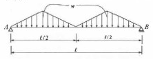
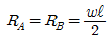
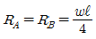
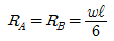
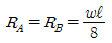
(정답률: 62%)
42. 래티스형식 조립압축재에 관한 설명으로 옳지 않은 것은?
- 단일 래티스 부재의 세장비 L/r은 140 이하로 한다.
- 단일 래티스 부재의 부재축에 대한 기울기는 60° 이상으로 한다.
- 복 래티스 부재의 세장비 L/r은 180 이하로 한다.
- 복 래티스 부재의 부재축에 대한 기울기는 45° 이상으로 한다.
(정답률: 52%)
43. 강도설계법에서 단철근 직사각형 보의 단면이 b=400mm, d=800mm 이고 등가응력블록깊이 a가 100mm 일 경우 철근비는? (단, fy=300MPa, fck=24MPa)
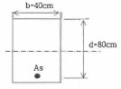
- 0.0035
- 0.0⑤7
- 0.0085
- 0.0103
(정답률: 50%)
44. 다음과 같은 조건에서의 필릿용접의 최소 사이즈는 얼마인가?
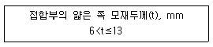
- 3 mm
- 5 mm
- 6 mm
- 8 mm
(정답률: 69%)
45. 그림에서 B점에 도달되는 모멘트는 얼마인가?
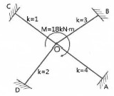
- 2.7 kNㆍm
- 3.0 kNㆍm
- 5.4 kNㆍm
- 6.0 kNㆍm
(정답률: 64%)
46. 말뚝머리지름이 400mm인 기성콘크리트 말뚝을 시공할 때 그 중심간격으로 가장 적당한 것은?
- 800 mm
- 900 mm
- 1000 mm
- 1100 mm
(정답률: 66%)
47. 인장이형철근 및 압축이형철근의 정착길이(ℓd)에 관한 기준으로 옳지 않은 것은? (단, KBC2016기준)
- 계산에 의하여 산정한 인장이형철근의 정착길이는 항상 250mm이상 이어야 한다.
- 계산에 위하여 산정한 압축이형철근의 정착길이는 항상 200mm이상 이어야 한다.
- 인장 또는 압축을 받는 하나의 다발철근 내에 있는 개개 철근의 정착길이 ℓd는 다발철근이 아닌 경우의 각 철근의 정착길이보다 3개의 철근으로 구성된 다발철근에 대해서 20%를 증가시켜야 한다.
- 단부에 표준갈고리가 있는 인장이형철근의 정착길이는 항상 8db이상 또한 150mm 이상이어야 한다.
(정답률: 55%)
48. 강구조 기둥의 주각부에 관한 설명으로 옳지 않은 것은?
- 기둥의 응력이 크면 윙플레이트, 접합앵글 리브 등으로 보강하여 응력으 분산을 도모한다.
- 앵커볼트는 기초콘크리트에 매입되어 주각부의 이동을 방지하는 역할을 한다.
- 주각은 조건에 관계없이 고정으로만 가정하여 응력을 산정한다.
- 축방항력이나 휨모멘트는 베이스플레이트 저면의 압축력이나 앵커볼트의 인장력에 의해 전달된다.
(정답률: 65%)
49. 그림과 같은 구조물의 부정정 차수는?
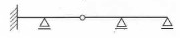
- 1차
- 2차
- 3차
- 4차
(정답률: 63%)
50. 기초설계 시 장기 150kN(자중포함)의 하중을 받는 경우 장기허용지내력도 20kN/m2의 지반에서 필요한 기초판의 크기는?
- 1.6m × 1.6m
- 2.0m × 2.0m
- 2.4m × 2.4m
- 2.8m × 2.8m
(정답률: 57%)
51. 그림과 같은 트러스에서 a부재의 부재력은 얼마인가?
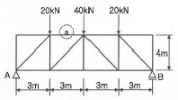
- 20 kN(인장)
- 30 kN(압축)
- 40 kN(인장)
- 60 kN(압축)
(정답률: 66%)
52. 그림과 같은 단순보를 I-200×100×7로 설계하였다면 최대 처짐량은? (단, Ix=2.18×107mm4, E=2.0×105MPa)(오류 신고가 접수된 문제입니다. 반드시 정답과 해설을 확인하시기 바랍니다.)
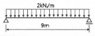
- 32.1mm
- 33.6mm
- 34.5mm
- 39.2mm
(정답률: 45%)
53. 다음 모살용접부의 유효 용접 면적은?
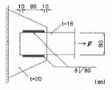
- 614.4mm2
- 691.2mm2
- 716.8mm2
- 806.4mm2
(정답률: 60%)
54. 강도설계법에서 처짐을 계산하지 않는 경우, 철근 콘크리트 보의 최소두께 규정으로 옳은 것은? (단, 보통콘크리트 mc=2300 kg/m3와 설계기준 항복강도 400MPa 철근을 사용한 부재)
- 1단연속 : l/18.5
- 단순지지 : l/15
- 양단연속 : l/24
- 캔틸레버 : l/10
(정답률: 64%)
55. 다음 그림에서 동일한 처짐이 되기 위한 P1, P2의 값의 비로 옳은 것은? 9단, 부재의 EI는 일정하다.)
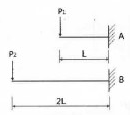
- P1 : P2=2 : 1
- P1 : P2=4 : 1
- P1 : P2=6 : 1
- P1 : P2=8 : 1
(정답률: 61%)
56. 연약지반에 대한 대책으로 옳지 않은 것은?
- 지반개량공법을 실시한다.
- 말뚝기초를 적용한다.
- 독립기초를 적용한다.
- 건물을 경량화한다.
(정답률: 65%)
57. 길이가 1.5m 이고, 한 변이 100mm인 정사각형 단면을 가지고 있는 캔틸레버보의 최대휨응력과 최대처짐을 구하면? (단, 부재의 탄성계수 : 1×104MPa)
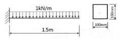
- 최대휨응력 : 3.37 MPa, 최대처짐 : 3.8 mm
- 최대휨응력 : 3.37 MPa, 최대처짐 : 7.6 mm
- 최대휨응력 : 6.75 MPa, 최대처짐 : 3.8 mm
- 최대휨응력 : 6.75 MPa, 최대처짐 : 7.6 mm
(정답률: 39%)
58. 폭이 b=100mm, 높이가 h=200mm인 단면에 전단력 4kN이 작용할 때 최대전단응력을 구하면?
- 0.3MPa
- 0.4MPa
- 0.5MPa
- 0.6MPa
(정답률: 40%)
59. 그림과 같은 철근 콘크리트보의 균열모멘트(Mcr)값은? (단, 보통중량 콘크리트 사용, fck=24MPa, fy=400MPa)
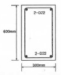
- 21.5kNㆍm
- 33.6kNㆍm
- 42.8kNㆍm
- 55.6kNㆍm
(정답률: 55%)
60. 콘크리트 압축강도가 30MPa 일 때 보통골재를 사용한 콘크리트의 탄성계수는?
- 2.62×104MPa
- 2.75×104MPa
- 2.95×104MPa
- 3.12×104MPa
(정답률: 58%)
4과목: 건축설비
61. 급탕배관에 관한 설명으로 옳지 않은 것은?
- 관의 신축을 고려하여 굽힘 부분에는 스위블이음 등으로 접합한다.
- 관의 신축을 고려하여 건물의 벽관통 부분의 배관에는 슬리브를 사용한다.
- 역구배나 공기 정체가 일어나기 쉬운 배관 등 온수의 순환을 방해하는 것을 피한다.
- 배관재로 동관을 사용하는 경우 관내유속을 느리게 하면 부식되기 쉬우므로 2.5m/s 이상으로 하는 것이 바람직하다.
(정답률: 61%)
62. 작업면의 필요 조도가 400[lx], 면적이 10[m2], 전등 1개의 광속이 2000[lm], 감광 보상률이 1.5, 조명률이 0.6일 때 전등의 소요 수량은?
- 3등
- 5등
- 8등
- 10등
(정답률: 63%)
63. 알칼리 축전지에 관한 설명으로 옳지 않은 것은?
- 고율방점특성이 좋다.
- 공칭전압은 2[V/셀]이다.
- 기대수명이 10년 이상이다.
- 부식성의 가스가 발생하지 않는다.
(정답률: 66%)
64. 급기온도를 일정하게 하고 송풍량을 변화시켜서 실내온도를 조절하는 공기조화방식은?
- FCU 방식
- 이중덕트방식
- 정풍량 단일덕트방식
- 변풍량 단일덕트방식
(정답률: 66%)
65. 온수난방과 비교한 증기난방의 설명으로 옳은 것은?
- 예열시간이 길다.
- 한랭지에서 동결의 우려가 있다.
- 부하변동에 따른 방열량 제어가 용이하다.
- 열매온도가 높으므로 방열기의 방열면적이 작아진다.
(정답률: 65%)
66. 옥내소화전설비의 설치기준으로 옳지 않은 것은?
- 방수구는 바닥으로부터의 높이가 1.5m 이하가 되도록 한다.
- 연결송수관설비의 배관과 겸용할 경우의 주배관은 구경 100 mm 이상으로 한다.
- 특정소방대상물의 각 부분으로부터 하나의 옥내소화전방수구까지의 수평거리가 30m 이하가 되도록 한다.
- 수원은 그 저수량이 옥내소화전의 설치개수가 가장 많은 층의 설치개수(5개 이상 설치된 경우에는 5개)에 2.6m3를 곱한 양 이상이 되도록 한다.
(정답률: 49%)
67. 자동화재탐지설비의 열감지기 중 주위온도가 일정온도 이상일 때 작동하는 것은?
- 차동식
- 정온식
- 광천식
- 이온화식
(정답률: 80%)
68. 덕트의 치수 결정 방법에 속하지 않는 것은?
- 균등법
- 등속법
- 등마찰법
- 정압재취득법
(정답률: 45%)
69. 다음 중 약전설비에 속하는 것은?
- 변전설비
- 전화설비
- 축전지설비
- 자가발전설비
(정답률: 69%)
70. 습공기가 냉각되어 포함되어 있던 수증기가 응축되기 시작하는 온도를 의미하는 것은?
- 노점온도
- 습구온도
- 건구온도
- 절대온도
(정답률: 68%)
71. 급수방식 중 고가수조방식에 관한 설명으로 옳은 것은?
- 상향급수 배관방식이 주로 사용된다.
- 3층 이상의 고층으로의 급수가 어렵다.
- 압력수조방식에 비해 급수압 변동이 크다.
- 펌프직송방식에 비해 수질오염 가능성이 크다.
(정답률: 67%)
72. 광속이 2000[lm]인 백열전구로부터 2[m] 떨어진 책상에서 조도를 측정하였더니 200[lx]이었다. 이 책상을 백열전구로부터 4[m] 떨어진 곳에 놓고 측정하였을 때 조도는?
- 50[lx]
- 100[lx]
- 150[lx]
- 200[lx]
(정답률: 77%)
73. 자연환기에 관한 설명으로 옳은 것은?
- 풍력환기에 의한 환기량은 풍속에 반비례한다.
- 풍력환기에 의한 환기량은 유량계수에 비례한다.
- 중력환기에 의한 환기량은 공기의 입구와 출구가 되는 두 개구부의 수직거리에 반비례한다.
- 중력환기에서는 실내온도가 외기온도보다 높을 경우, 공기는 건물 상부의 개구부에서 들어와서 하부의 개구부로 나간다.
(정답률: 54%)
74. 보일러 하부의 물드럼과 상부의 기수드럼을 연결하는 다수의 관을 연소실 주위에 배치한 구조로 상부 기수드럼 내의 증기를 사용하는 보일러는?
- 수관 보일러
- 관류 보일러
- 주철제 보일러
- 노통연관 보일러
(정답률: 46%)
75. 압축식 냉동기의 냉동사이클로 옳은 것은?
- 압축→응축→팽창→증발
- 압축→팽창→응축→증발
- 응축→증발→팽창→압축
- 팽창→증발→압축→응축
(정답률: 76%)
76. 배수트랩의 구비조건으로 옳지 않은 것은?
- 가동부분이 있을 것
- 자기세정 기능을 가지고 있을 것
- 봉수깊이는 50mm 이상 100mm 이하일 것
- 오수에 포함된 오믈 등이 부착 또는 침전하기 어려운 구조일 것
(정답률: 61%)
77. 대변기에 설치한 세정밸브(flush valve)의 최저 필요 압력은?
- 10 kPa 이상
- 30 kPa 이상
- 50 kPa 이상
- 70 kPa 이상
(정답률: 48%)
78. 엘리베이터의 안정장치 일정 이상의 속도가 되었을 때 브레이크 등을 작동시키는 기능을 하는 것은?
- 조속기
- 권상기
- 완충기
- 가이드 슈
(정답률: 73%)
79. LPG에 관한 설명으로 옳지 않은 것은?
- 비중이 공기보다 작다.
- 액화석유가스를 말한다.
- 액화하면 그 체적은 약 1/250로 된다.
- 상압에서는 기체이지만 압력을 가하면 액화된다.
(정답률: 67%)
80. 합성 최대 수용 전력이 1000[kW], 부하율이 0.6일 때 평균 전력 [kW]은?
- 600
- 800
- 1000
- 1667
(정답률: 69%)
5과목: 건축법규
81. 다음 중 해당 용도로 사용되는 바닥면적의 합계에 의해 건축물의 용도 분류가 다르게 되지 않는 것은?
- 오피스텔
- 종교집회장
- 골프연습장
- 휴게음식점
(정답률: 55%)
82. 용도변경과 관련된 시설군 중 산업 등 시설군에 속하지 않는 것은?
- 운수시설
- 창고시설
- 발전시설
- 묘지관련시설
(정답률: 54%)
83. 부설주차장 설치 대상 시설물로서 시설면적이 1400m2인 제2종 근린생활시설에 설치하여야 하는 부설주차장의 최소 대수는?
- 7대
- 9대
- 10대
- 14대
(정답률: 64%)
84. 준주거지역안에서 건축할 수 없는 건축물에 속하지 않는 것은?
- 위락시설
- 자원순환 관련 시설
- 의료시설 중 격리병원
- 문화 및 집회시설 중 공연장
(정답률: 40%)
85. 막다른 도로의 길이가 15m일 때 이 도로가 건축법령상 도로이기 위한 최소 폭은?
- 2m
- 3m
- 4m
- 6m
(정답률: 55%)
86. 문화 및 집회시설 중 공연장의 개별관람석 바닥면적이 2000m2일 경우 개별관람석의 출구는 최소 몇 개소 이상 설치하여야 하는가? (단, 각 출구의 유효너비를 2m로 하는 경우)
- 3개소
- 4개소
- 5개소
- 6개소
(정답률: 45%)
87. 상업지역의 세분에 속하지 않는 것은?
- 중심상업지역
- 근린상업지역
- 유통상업지역
- 전용상업지역
(정답률: 50%)
88. 다음의 직통계단의 설치에 관한 기준 내용 중 밑줄 친 “다음 각 호의 어느 하나에 해당하는 용도 및 규모의 건축물”의 기준 내용으로 옳지 않은 것은?
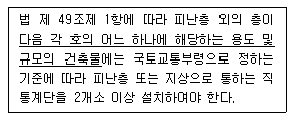
- 지하층으로서 그 층 거실의 바닥면적의 합계가 200m2 이상인 것
- 종교시설의 용도로 쓰는 층으로서 그 층에서 해당 용도로 쓰는 바닥면적의 합계가 200m2 이상인것
- 숙박시설의 용도로 쓰는 3층 이상의 층으로서 그 층의 해당 용도로 쓰는 거실의 바닥면적의 합계가 200m2 이상인 것
- 업무시설 중 오피스텔의 용도로 쓰는 층으로서 그 층의 해당 용도로 쓰는 거실의 바닥면적의 합계가 200m2 이상인 것
(정답률: 60%)
89. 건축법령에 따라 건축물의 경사지붕 아래에 설치하는 대피공간에 관한 기준 내용으로 옳지 않은 것은?
- 특별피난계단 또는 피난계단과 연결되도록 할 것
- 관리사무소 등과 긴급 연락이 가능한 통신 시설을 설치할 것
- 대피공간의 면적은 지붕 수평투영면적의 20분의 1 이상 일 것
- 출입구는 유효너비 0.9m 이상으로 하고, 그 출입구에는 갑종방화물을 설치할 것
(정답률: 62%)
90. 주차법령상 다음과 같이 정의 되는 주차장의 종류는?
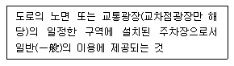
- 노외주차장
- 노상주차장
- 부설주차장
- 공영주차장
(정답률: 68%)
91. 다음은 승용 승강기의 설치에 관한 기준 내용이다. 밑줄 친 “대통령령으로 정하는 건축물”에 대한 기준 내용으로 옳은 것은?
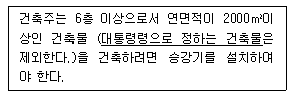
- 층수가 6층인 건축물로서 각 층 거실의 바닥면적 300m2 이내마다 1개소 이상의 직통계단을 설치한 건축물
- 층수가 6층인 건축물로서 각 층 거실의 바닥면적 500m2 이내마다 1개소 이상의 직통계단을 설치한 건축물
- 층수가 10층인 건축물로서 각 층 거실의 바닥면적 300m2 이내마다 1개소 이상의 직통계단을 설치한 건축물
- 층수가 10층인 건축물로서 각 층 거실의 바닥면적 500m2 이내마다 1개소 이상의 직통계단을 설치한 건축물
(정답률: 45%)
92. 다음은 대지의 조경에 관한 기준 내용이다. ( )안에 알맞은 것은?
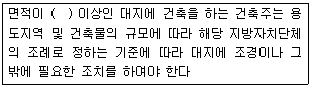
- 100m2
- 200m2
- 300m2
- 500m2
(정답률: 65%)
93. 다음 중 건축법령상 용도에 따른 건축물의 종류가 옳지 않은 것은?
- 교육연구시설 - 유치원
- 묘지관련시설 - 장례식장
- 관광휴게시설 - 어린이회관
- 문화 및 집회시설 - 수족관
(정답률: 66%)
94. 주거기능을 위주로 이를 지원하는 일부 상업 기능 및 업무기능을 보완하기 위하여 지정하는 주거지역의 세분은?
- 준주거지역
- 제1종 전용주거지역
- 제1종 일반주거지역
- 제2종 일반주거지역
(정답률: 78%)
95. 방송 공동수신설비를 설치하여야 하는 대상 건축물에 속하지 않는 것은?
- 다가구주택
- 다세대주택
- 바닥면적의 합계가 5000m2으로서 업무시설의 용도로 쓰는 건축물
- 바닥면적의 합계기 5000m2으로서 숙박시설의 용도로 쓰는 건축물
(정답률: 56%)
96. 주차장의 수급 실태를 조사하려는 경우, 조사 구역의 설정 기준으로 옳지 않은 것은?
- 원형 형태로 조사구역을 설정한다.
- 각 조사구역은 「건축법」에 따른 도로를 경계로 구분한다.
- 조사구역 바깥 경계선의 최대거리가 300m를 넘지 아니하도록 한다.
- 주거기능과 상업ㆍ업무기능이 섞여 있는 지역의 경우에는 주차시설 수급의 적정성, 지역적 특성등을 고려하여 같은 특성을 가진 지역별로 조사구역을 설정한다.
(정답률: 66%)
97. 전용주거지역이나 일반주거지역에서 건축물을 건축하는 경우, 건축물의 높이 9m 이하의 부분은 정북(正北) 방향으로의 인접 대지경계선으로부터 원칙적으로 최소 얼마 이상의 거리를 띄어야 하는가?
- 1m
- 1.5m
- 2m
- 3m
(정답률: 73%)
98. 면적 등의 산정방법에 대한 기본 원칙으로 옳지 않은 것은?
- 대지면적은 대지의 수평투영면적으로 한다.
- 건축면적은 건축물의 외벽의 중심선으로 둘러싸인 부분의 수평투영면적으로 한다.
- 바닥면적은 건축물의 각 층 또는 그 일부로서 벽, 기둥, 그 밖에 이와 비슷한 구획의 중심선으로 둘러싸인 부분의 수평투영면적으로 한다.
- 용적률 산정 시 적용하는 연면적은 지하층을 포함하여 하나의 건축물 각 층의 바닥면적의 합계로 한다.
(정답률: 71%)
99. 건축법령에 따른 고층건축물의 정의로 옳은 것은?
- 층수가 30층 이상이거나 높이가 90m 이상인 건축물
- 층수가 30층 이상이거나 높이가 120m 이상인 건축물
- 층수가 50층 이상이거나 높이가 150m 이상인 건축물
- 층수가 50층 이상이거나 높이가 200m 이상인 건축물
(정답률: 79%)
100. 용도지역에 따른 견폐율을 최대한도로 옳지 않은 것은? (단, 도서지역의 경우)
- 녹지지역 : 30% 이하
- 주거지역 : 70% 이하
- 공업지역 : 70% 이하
- 상업지역 : 90% 이하
(정답률: 68%)